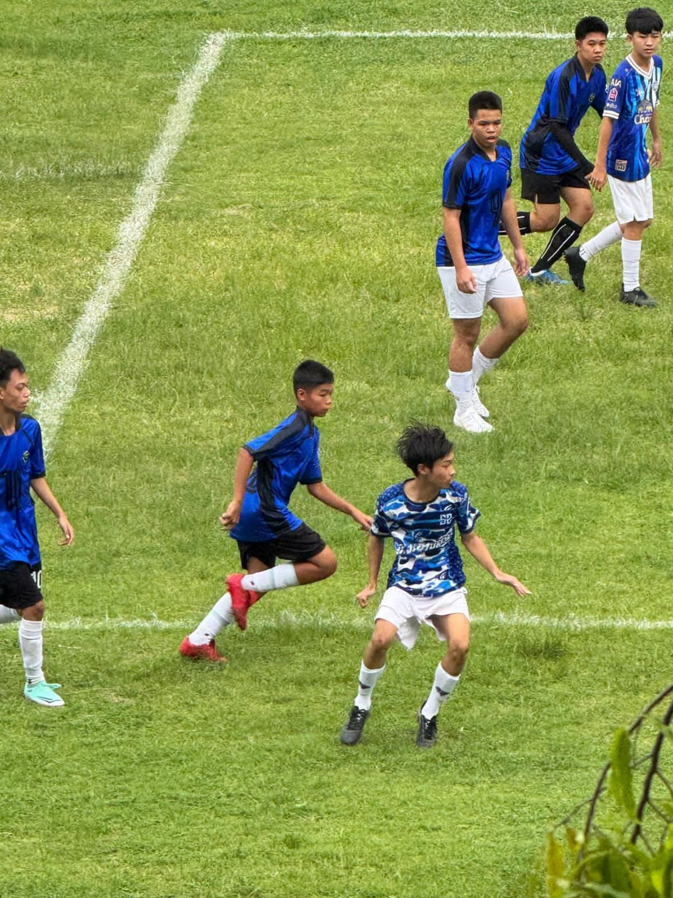

📁 แฟ้มสะสมงาน
ผลงานและเกียรติบัตรของ ภานุพงศ์ บัวทอง
🏆 กิจกรรม / เกียรติบัตร

เกียรติบัตรเข้าร่วมนิทรรศการ และกิจกรรมด้านเทคโนโลยี
เนื่องในงานสัปดาห์วิทยาศาสตร์แห่งชาติ ประจำปีการศึกษา 2569 เพื่อส่งเสริมความรู้และทักษะ ด้านวิทยาศาสตร์ เทคโนโลยี และนวัตกรรม
ประโยชน์ที่ได้รับ :
ได้เพิ่มพูนความรู้ด้านวิทยาศาสตร์
และเทคโนโลยี
ได้เรียนรู้การใช้เทคโนโลยีและ AI
อย่างเหมาะสมและปลอดภัย
ได้พัฒนาทักษะการใช้เทคโนโลยี
ในชีวิตประจำวัน
ได้เปิดมุมมองเกี่ยวกับนวัตกรรม
และเทคโนโลยีสมัยใหม่
และสามารถนำประสบการณ์ไปต่อยอด
ในการเรียนและการทำงาน
ด้านเทคโนโลยีในอนาคต
🏆 กิจกรรม / เกียรติบัตร

เกียรติบัตรเข้าร่วมอบรม การป้องกันการทุจริต
ประโยชน์ที่ได้รับ :
ได้ความรู้เกี่ยวกับการป้องกัน
และต่อต้านการทุจริต
ได้เรียนรู้เรื่องคุณธรรม จริยธรรม
และความซื่อสัตย์
สามารถนำความรู้ไปใช้
ในการดำเนินชีวิตประจำวันได้
ช่วยสร้างจิตสำนึกในการเป็น
พลเมืองที่ดีและรับผิดชอบต่อสังคม
และสามารถนำเกียรติบัตร
ไปใช้ประกอบ Portfolio
🏆 กิจกรรม / เกียรติบัตร


เกียรติบัตรเข้าร่วมการแข่งขันฟุตบอล 7 คน เนื่องในกิจกรรมรณรงค์ต่อต้านยาเสพติดโลก ประจำปี 2569 ณ โรงเรียนบ้านบึง “อุตสาหกรรมนุเคราะห์” การเข้าร่วมกิจกรรมครั้งนี้ทำให้ได้พัฒนาทักษะด้านกีฬา ฝึกการทำงานเป็นทีม ความสามัคคี ความมีน้ำใจนักกีฬา และความรับผิดชอบ รวมถึงส่งเสริมการใช้เวลาว่างให้เกิดประโยชน์และมีสุขภาพร่างกายที่แข็งแรง
ประโยชน์ที่ได้รับ :
การเข้าร่วมการแข่งขันฟุตบอลช่วยให้ได้ฝึก การทำงานเป็นทีม ความสามัคคี ความมีน้ำใจนักกีฬา และความรับผิดชอบ
นอกจากนี้ยังช่วยส่งเสริมสุขภาพร่างกายและการออกกำลังกาย รวมถึงได้เรียนรู้การปฏิบัติตามกฎ กติกา และการเคารพผู้อื่น